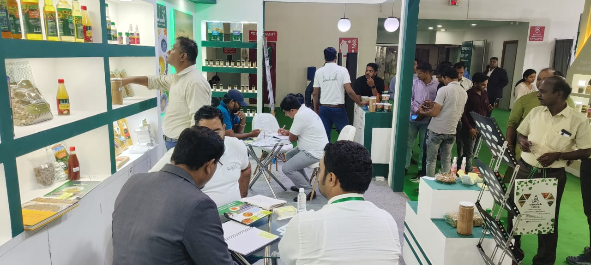

Firmly rooted in tradition
Foodspert


Firmly rooted in tradition

Our initiative, Foodspert, is designed to cultivate a cadre of food experts who possess comprehensive knowledge about food—from its origin, cultivation, and nutrition to its history, culinary traditions, and value addition.
In today’s fast-paced world, convenience has overtaken tradition. Meals that once required hours of careful preparation are now reduced to minutes, often at the press of a microwave button. The act of eating has shifted from a ritual of enjoyment and mindfulness to a functional process focused solely on satiation.
Through Foodspert, Morarka Organic seeks to revive and preserve the rich heritage of food, reconnecting people with its cultural, nutritional, and ecological significance.

A Foodspert approaches food as more than fuel. Eating is an experience—one that encompasses pleasure, contentment, and understanding of dietary choices. Foodsperts emphasize the importance of nutrition, diversity, and sustainability, while also protecting traditional ingredients, recipes, and practices that are increasingly at risk of disappearing.
They work to revive forgotten grains, vegetables, fruits, and culinary techniques, ensuring that these valuable traditions continue for future generations.
The philosophy of a Foodspert is rooted in balance: food should be tasty, wholesome, and unpolluted, while promoting environmental stewardship and the well-being of humans and animals alike.

Foodsperts are informed participants in the food ecosystem—they understand production, processing, nutrition, and culinary application.
By bridging scientific research, traditional farming knowledge, and consumer behavior, Foodsperts create a vital link connecting farmers, producers, and end consumers.
Through education, guidance, and advocacy, Foodsperts empower individuals to make informed daily food choices that are nutritious, sustainable, and culturally meaningful.
Foodsperts transform consumers from passive recipients into active participants in a food revolution, fostering awareness of clean, fair, and ecological food practices.
Finally, Foodsperts recognize the intrinsic connection between food, biodiversity, and the planet. By promoting organic, sustainable practices and protecting traditional food systems, they safeguard not just health, but also communities, cultures, and ecosystems—ensuring a better quality of life for all.

"Food is not just nourishment—it is culture, heritage, and a bridge to a healthier, more sustainable future."